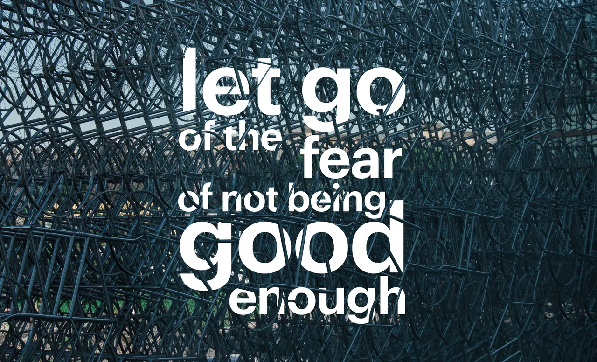
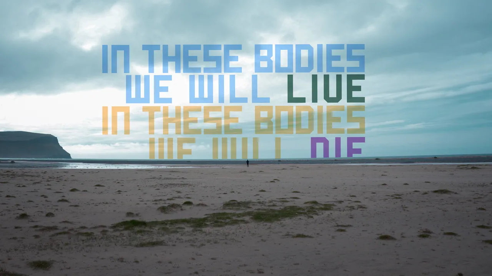
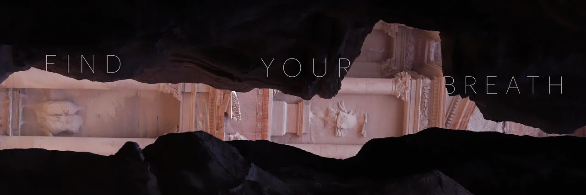

Hyatt Place


Parallel Perceptions Nominee · Conceptual · 12th Fine Art Photography Awards 2025–2026
Nominee · Conceptual · 12th Fine Art Photography Awards 2025–2026


Los Innato


Photo & text




◎Photo · V · 20 photos
Photomontage, personal series and photo with text.
Hyatt Place
Parallel Perceptions Nominee · Conceptual · 12th Fine Art Photography Awards 2025–2026
Nominee · Conceptual · 12th Fine Art Photography Awards 2025–2026
Los Innato
Photo & text


